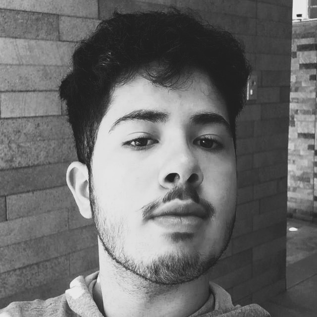

Sobre Mim
Olá! Meu nome é Arthur Giovanni, tenho 19 anos e sou um entusiasta de tecnologia e análise de dados. Atualmente, sou estudante do programa Oracle Next Education (ONE), um curso intensivo de tecnologia e programação em parceria com a Alura, onde desenvolvo habilidades essenciais para atuar no mercado de tecnologia e dados.
Desde cedo, sempre fui movido pela curiosidade e desejo de entender como as coisas funcionam. Isso me levou a explorar diferentes áreas da tecnologia e aplicar na prática o que aprendo. Um exemplo disso foi a criação de uma planilha no Excel para controle financeiro familiar, o que me permitiu visualizar e otimizar gastos de forma eficiente. Essa experiência reforçou minha paixão por dados, automação e estatística, e desde então venho me aprofundando cada vez mais no tema.
Acredito que a tecnologia vai além de códigos e números: ela tem o poder de transformar realidades. Por isso, além do meu desenvolvimento técnico, participo de trabalhos voluntários, como eventos de reciclagem e feiras de troca de livros, onde aprimorei habilidades de organização, comunicação e trabalho em equipe.
Atualmente, estou em busca de novos desafios e oportunidades para aplicar meus conhecimentos e continuar evoluindo. Se você procura alguém analítico, proativo e apaixonado por dados e tecnologia, será um prazer conectar e trocar ideias! 🚀
Minhas Habilidades
- 📊 Análise e tratamento de dados – Excel intermediário, gráficos estatísticos e visualização de informações
- 🐍 Programação e automação – Python intermediário, lógica de programação e manipulação de dados
- 📈 Tomada de decisão baseada em dados – Interpretação e apresentação de insights
- 🤝 Trabalho em equipe e comunicação – Experiência em projetos voluntários e colaborativos
- 📅 Organização e planejamento – Flexibilidade e foco em soluções práticas
- 🌍 Inglês intermediário – Leitura e estudo de materiais técnicos internacionais